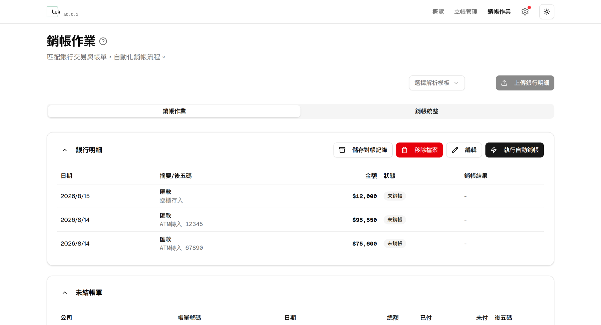
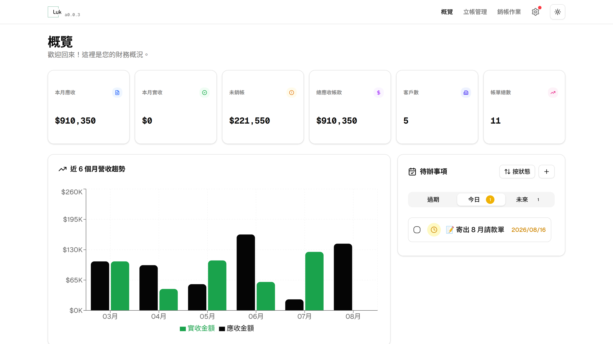
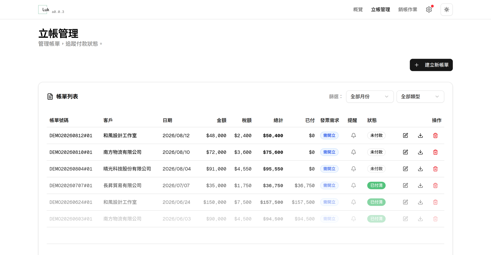

Open source · Runs locally · MIT
Incoming payments,
matched to invoices.
Luk reads your bank statement, identifies the customer from the last five digits of the transfer account, and settles open invoices oldest-first. An afternoon of comparing two windows line by line becomes one button.
Auto-settled
2026 / 08
Bank statement
Open invoice
Why this exists
Small-company reconciliation gets stuck in the same place
Payments arrive through virtual account numbers, and the bank statement keeps only the last five digits. Your customer will not tell you which invoice the money was for.
- Five digits are all you get
- The memo reads “ATM DEPOSIT 12345”. You have to look up which company owns that number before you know who paid.
- One payment, several invoices
- Customers often send one round figure. You split it across open invoices yourself — and remember whatever is left over.
- Mismatched amounts mean digging
- Overpayments have to carry to next month; shortfalls have to be chased. That state lives in a spreadsheet and in someone's head, and it breaks the moment they hand over.
How it works
Three steps, from statement to settled
Upload the bank statement
Drop in the Excel file your bank exports. The first time, you map which column holds the date, the amount and the memo; save it as a template and reuse it after that.
Attribute and settle automatically
The last five digits are pulled from the memo to identify the customer, then open invoices are settled oldest-first. Anything overpaid becomes credit for that customer and is applied automatically next period.
Close the month without deleting anything
Closing a month marks its transactions as closed — it deletes no records. When someone later asks how a payment was attributed, the trail is still there.
Principle
How money gets allocated across invoices
The numbers in the two examples below come from running those scenarios through the actual matching engine. They are not illustrations.
| Invoice | Date | Due | Applied | Result |
|---|---|---|---|---|
| A-001 | 05/02 | 84,000 | 84,000 | Paid |
| A-002 | 05/18 | 63,000 | 63,000 | Paid |
| A-003 | 06/04 | 91,000 | 53,000 | Partial |
| Allocated | 200,000 | |||
Oldest gets paid first. The 200,000 runs out exactly; the newest invoice A-003 is only partly covered and the remaining 38,000 stays open. If a payment exceeds everything outstanding, the excess is not forced onto an invoice — it becomes credit for that company and is applied next period.
| Candidate | Invoice | Due | Applied | Result |
|---|---|---|---|---|
| Company B | B-001 | 50,000 | 0 | Untouched |
| Company C | C-001 | 50,000 | 0 | Untouched |
| Allocated | 0 | Needs review | ||
When unsure, it does not guess. The payment is flagged for review, neither company's ledger moves, and the decision is left to you. A pending task is cheaper than a wrong one — once a payment is booked against the wrong company, undoing it costs far more than a second look.
Screens
See the ledger, and what is still missing
The screens below use fictional demo data. The interface itself is in Traditional Chinese.



Before you start
What this is not
This is an in-house tool for a small company, running on one machine. It is not a SaaS product. Please check you are comfortable with these constraints before installing it.
Anyone who can reach the service can see every record and delete data. Run it on your own machine; do not expose it to the public internet.
No cloud sync, no multi-user collaboration. Moving to another machine means moving the file yourself, and backups are your responsibility.
The matching logic assumes the last five digits of a virtual account number, and it defaults to New Taiwan dollars with 5% business tax. The interface is in Traditional Chinese.
Getting started
Run it from source
# get the source
git clone https://github.com/VaalRL/public-luk
cd public-luk
# install and create the database
npm install
npx prisma migrate deploy
# start, then open http://localhost:3001
npm run dev- RuntimeNode.js 20+
- DatabaseSQLite (bundled)
- Desktop buildelectron-builder
- LicenseMIT
The xlsx dependency points at the
official SheetJS CDN rather than the npm registry. That is deliberate — the registry version is
frozen at 2022 and misses later security fixes. If your network blocks that domain, configure a proxy first.